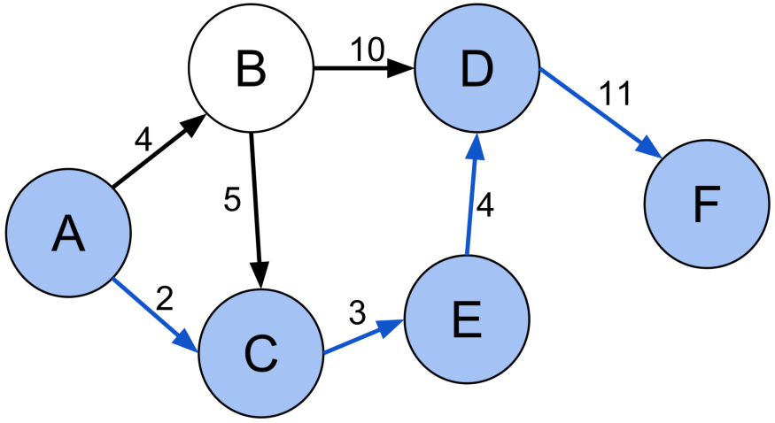

Pathfinding algorithms are usually an attempt to solve the shortest path problem in graph theory. They try to find the best path given a starting point and ending point based on some predefined criteria.
In graph theory, the shortest path problem is the problem of finding a path between two vertices (or nodes) in a graph such that the sum of the weights of its constituent edges is minimized.
That’s a pretty dense sentence, so let’s try and unpack it. What it is essentially trying to say is “Find the shortest path in between two points or nodes in a graph.
They are mathematical structures used to model pairwise relationships in between objects. A graph consists of nodes/vertices/points that are connected edges/links/lines. I know this may seem a little confusing but just look to the visual below for more clarification.
The circles with letters in them are nodes/vertices/points and the lines connecting/relating the circles are the edges/links/lines. The letters in the circles uniquely represent that circle. The numbers on the lines represent how much it will cost to move along that line.
Path finding algorithms are important because they are used in applications like google maps, satellite navigation systems, routing packets over the internet. The usage of pathfinding algorithms isn’t just limited to navigation systems. The overarching idea can be applied to other applications as well. The usage will become clearer as we talk about some examples and implementations of pathfinding algorithms.